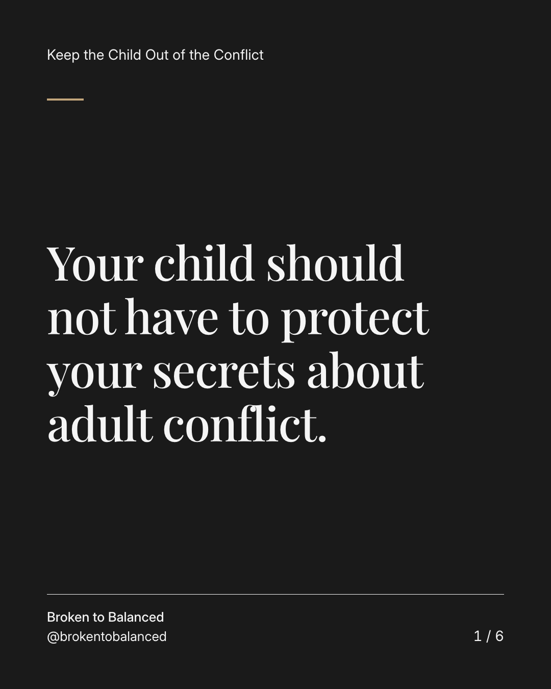
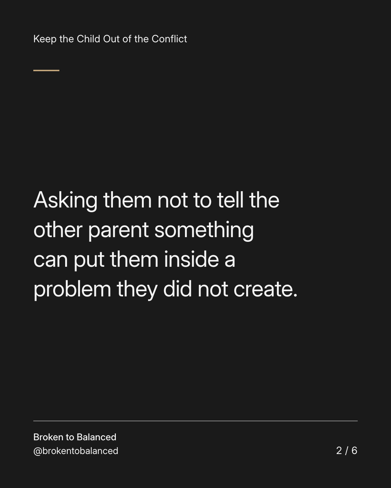
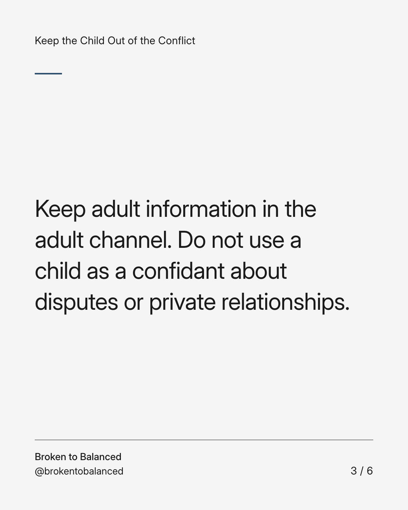
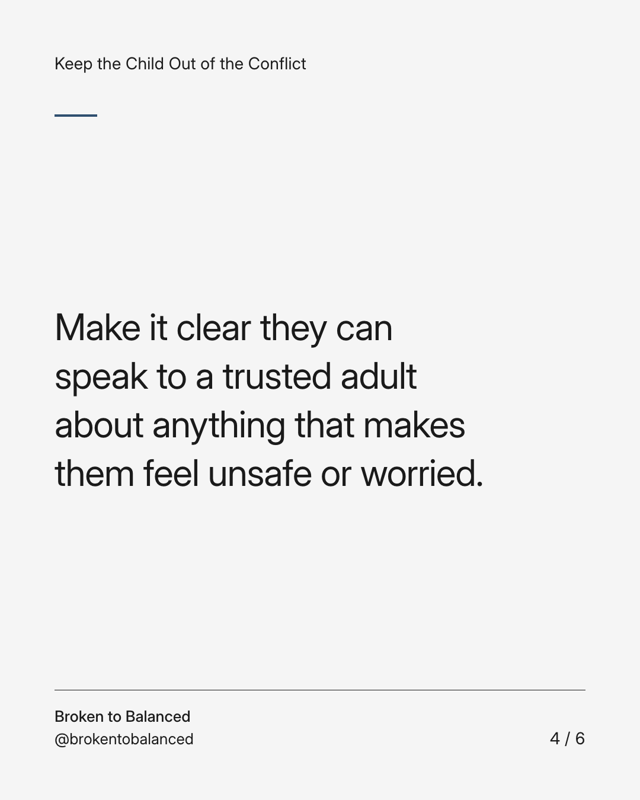
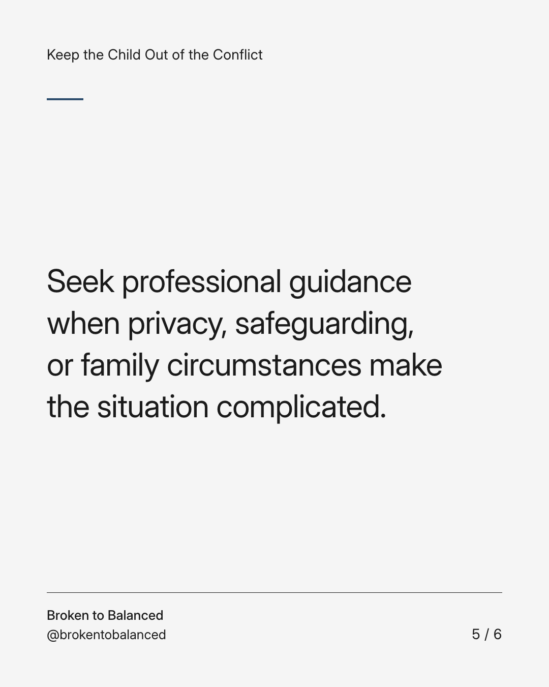
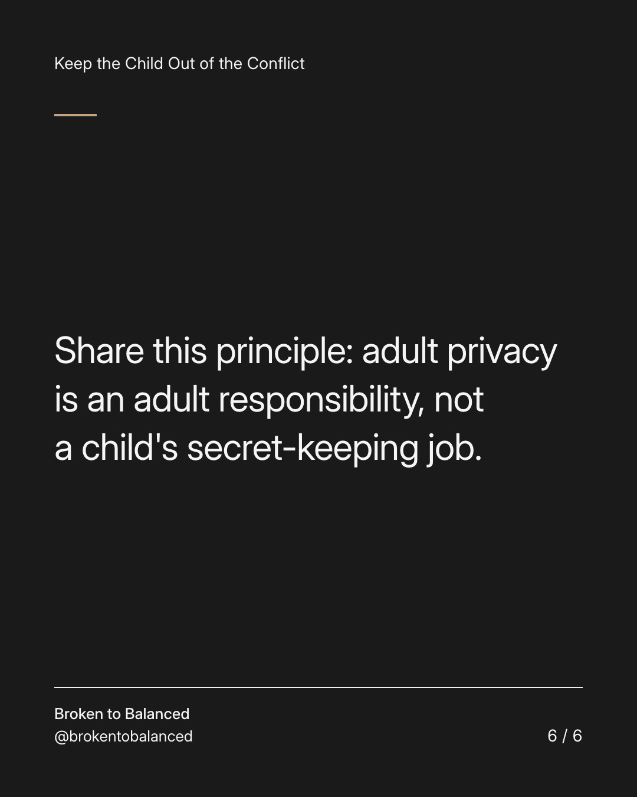

Exact text and accessibility text
Your child should not have to protect your secrets about adult conflict.
Slide 1 of 6. Your child should not have to protect your secrets about adult conflict.


Exact text and accessibility text
Asking them not to tell the other parent something can put them inside a problem they did not create.
Slide 2 of 6. Asking them not to tell the other parent something can put them inside a problem they did not create.


Exact text and accessibility text
Keep adult information in the adult channel. Do not use a child as a confidant about disputes or private relationships.
Slide 3 of 6. Keep adult information in the adult channel. Do not use a child as a confidant about disputes or private relationships.


Exact text and accessibility text
Make it clear they can speak to a trusted adult about anything that makes them feel unsafe or worried.
Slide 4 of 6. Make it clear they can speak to a trusted adult about anything that makes them feel unsafe or worried.


Exact text and accessibility text
Seek professional guidance when privacy, safeguarding, or family circumstances make the situation complicated.
Slide 5 of 6. Seek professional guidance when privacy, safeguarding, or family circumstances make the situation complicated.


Exact text and accessibility text
Share this principle: adult privacy is an adult responsibility, not a child's secret-keeping job.
Slide 6 of 6. Share this principle: adult privacy is an adult responsibility, not a child's secret-keeping job.
Exact caption
Plain-text fallback: select and copy the caption.